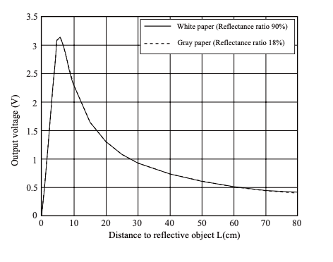
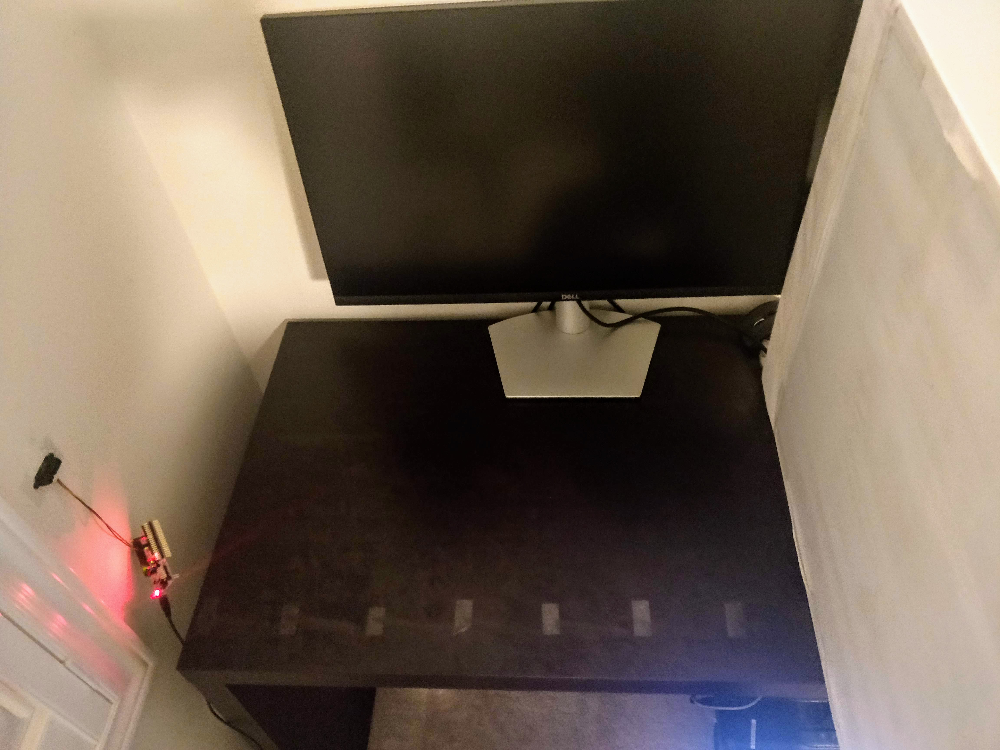
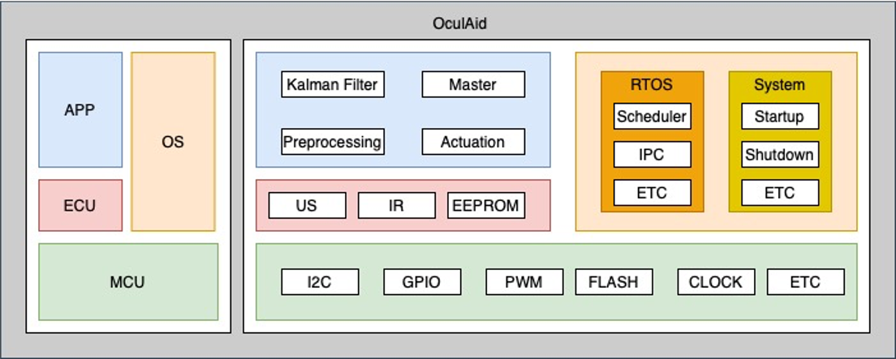

Infrastructure Setup
Prior to any development, the first thing required for the Software was to setup the infrastructure for compiling, testing and programming the application. This includes bringing in the low-level drivers for the STM32F401RE microcontroller (MCU) that we are using. Ideally, we would start from a blank project and one-by-one import each driver our system requires. However, due to time constraints, we have decided to use Mbed OS for our application, which includes all drivers for a set of supported MCUs. The con of this solution is the increase in the flash size of our application, but it is acceptable given the time saved. A benefit of Mbed OS is its integrated unit testing framework, which makes use of GoogleTest, a C++ test framework that our team is experienced and comfortable with. Our goal is to have 100% unit test coverage.
Infared Sensor Characterization
The first step in developing the infared (IR) sensor driver was to characterize its behaviour. The following is the a curve of the sensor's output voltage as the distance to an object varies, as reported by the datasheet.
However, sensors typically have variances associated with them that lead to slightly different behaviour than the theoretical. To determine each sensor's actual relationship between object distance and output voltage, the sensor was fixed to a flat surface, perpendicular to the ground. There were markings placed on a flat surface slightly under the sensor, every 10 cm from 10 to 80 cm, as shown in the following image.
Using the data gathered from this experiment, a power fit relationship was determined : y = a*x^b, where y is output voltage (16-bit ADC value), x is distance (mm), and a and b are constants.
Drivers
Drivers for the IR sensor, ultrasonic sensor, IMU and vibration motor were developed and unit tested to 100% unit test coverage. This provides us with a base for the project and components that can be integrated into our higher-level code. As mentioned above, we are using Mbed OS, which provides the low-level drivers for the MCU and the OS level functionality. The drivers developed by us for each component fall within the ECU block. Now, we can start development on the APP (Application) layer, consisting of the sensor fusion and master logic.
